AI動画生成は、
「すごい映像を作る競争」から
「安全に運用できる人が勝つ時代」へ。
Day8前半では、Veo 3.1、Kling 3.0、Seedance 2.0などの最新モデルを、 「どれが最強か」ではなく「何に向いているか」で整理する。 さらに、HeyGenのアバター、Adobe Fireflyの外部AI統合、YouTubeのAIラベル、 実在人物を使った危険なAI加工の法律リスクまで含めて、 技術・運用・倫理をまとめて学ぶ。
1. いま何が起きてる？
AI動画生成は、数ヶ月単位で主役が入れ替わる超高速の進化期に入っている。大事なのは、ランキングを見ることより、「何を作るか」に応じて使い分けること。
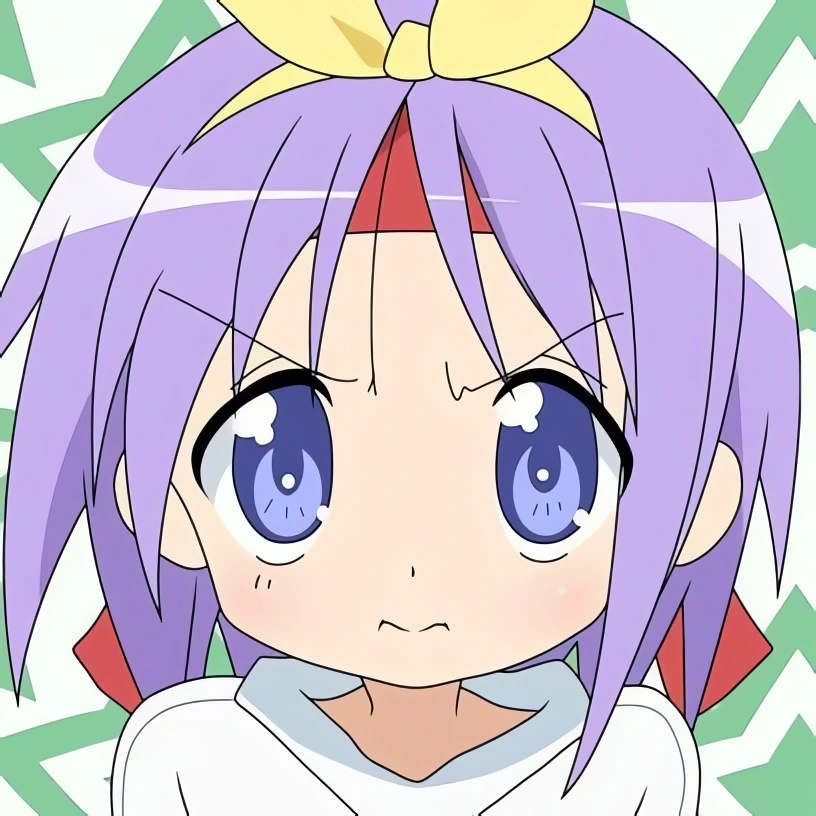
つ'">結局、いまはどのAIが一番すごいの？
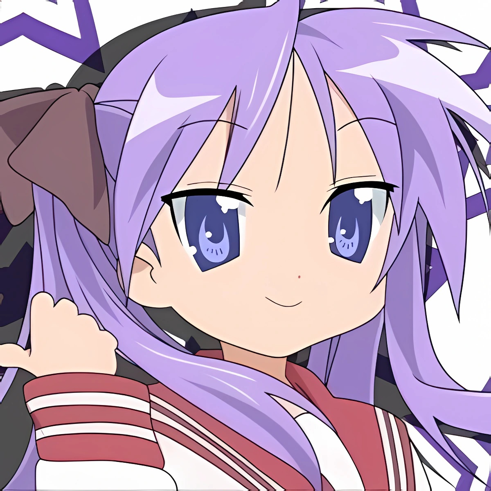
か'">その聞き方だと少しズレるのよ。Seedance 2.0は実写の動きや布・髪の自然さに強いし、Veo 3.1は音までまとめて作りやすい。Kling 3.0は複数カットをまとめて作りやすくてコスパもいい。つまり“最強1本”より“用途別の最適解”なの。
やさしく言うと：包丁1本で全部やるより、魚用・肉用・野菜用を使い分ける感じ。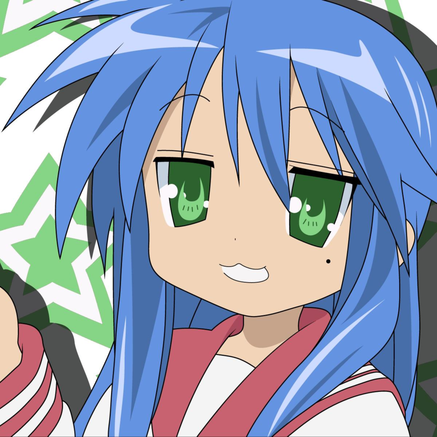
こ'">“最強を探す旅”より“使い分けの地図を持つ”方が、クレジットもメンタルも守れるってわけだね。
布、髪、重力、カメラ、空気感などの物理表現が自然。シネマ調、実写広告、映画風に向く。
映像と音を一括で作りやすい。セリフ、効果音、環境音までまとめたい時に強い。
マルチショットと低コストが魅力。複数カットの試作や、量産テスト向き。
2. モデルは“用途”で選ぶ
画質差だけを見る時代は終わりつつある。差が出るのは、動き、物理表現、音、量産性、実務とのつなぎやすさ。
- 実写CMや映画っぽい映像を作りたい
- 髪、服、重み、光の自然さを重視したい
- 短いけど濃い1本を作りたい
- 映像だけでなく音も一緒に考えたい
- 効果音、環境音、しゃべりもまとめて試したい
- Google系の流れで使いたい
- 複数カットの構成を一気に試したい
- コストを抑えながら試作したい
- ショート動画のバリエーションを増やしたい
先に「作りたい動画の勝ち筋」を決める。
例：実写CM、アバター説明、縦型広告、商品紹介、映画風、SNS量産。
3. HeyGenとAdobe Fireflyが意味すること
最新トレンドは“生成だけ”ではなく、“制作フローにどう組み込むか”。ここが実務でかなり大事。
映画風に動くアバターを作りやすい。最大3体まで同じシーンに置けるため、対話動画やプレゼン動画にも使いやすい。
地域制限、安定性、対象国の制約などがある場合がある。万能ではなく、様子見しながら使う道具。
外部AIモデルをAdobe環境で切り替えやすくなってきた。生成→ダウンロード→編集の手間を減らしやすい。
編集ソフトへ持って行くまでの摩擦が減る。制作スピードは上がるが、クレジット管理はより重要になる。
外部モデル統合では、プロンプトや素材が他社処理になる場合がある。社外秘や機密は特に注意。
“作れるか”だけでなく、“社内ルールに乗るか”“クライアント確認がいるか”も見る。
4. AI動画生成でハマりやすい7つの罠
初心者が失敗する原因は、センス不足ではない。設計不足と確認不足がほとんど。
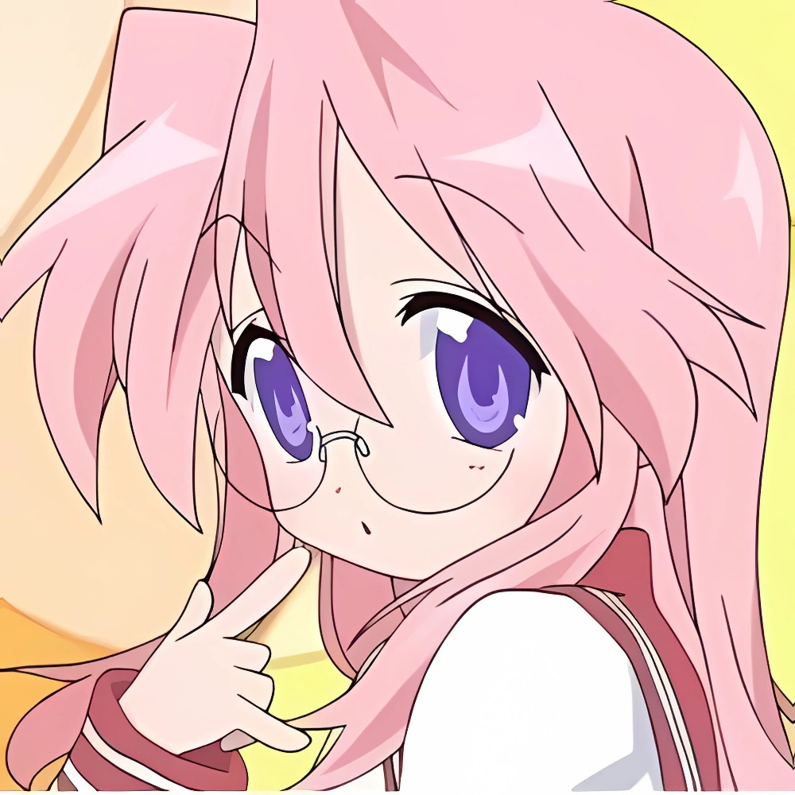
み'">一番多いのは、プロンプトを盛りすぎてAIが混乱することです。顔、手、背景、カメラ、感情、光、全部を一度に詰め込むと壊れやすいです。
だから、動かす対象を絞るの。激しい動きなら1つ、中くらいなら2つ、小さい動きなら3つくらいまでが目安。あと、原型画像を作ってから動画にするのが本当に大事。
やさしく言うと：最初から全部入りラーメンにしない。まずは麺とスープを安定させる。情報を詰め込みすぎると破綻しやすい。動きと対象を絞る。
短すぎる指示だとAIが勝手に補完する。主体、場所、動き、カメラ、雰囲気は入れる。
静止画を先に作らず動画へ行くと、顔、服、背景の一貫性が崩れやすい。
実務向け、アニメ向け、映画向け、アバター向けでツールは違う。
回し続けるとクレジットが消える。3回ルールで止める。
数字、日本語、ロゴ、商用条件、既存キャラ、有名人、肖像権を軽く見ると危険。
5. AIラベル・法律・やってはいけないこと
これからは“作れるか”だけでなく、“出していいか”が超重要。技術より先に、ここを知らないと危ない。
YouTube側がAI生成コンテンツを検知した場合、自動でラベルが付く流れが強まっている。AIラベル自体が即悪ではないが、隠す・誤魔化す・申告しない方が危ない。
人が編集した動画にAIラベルが付く可能性もあり得る。だからこそ、制作ログ、素材の出どころ、使ったツールを整理しておくと安心。
特に未成年や実在人物を使った不適切なAI加工は絶対に避ける。作っただけ、持っているだけでも問題になることがある。
「AIで作ったから安全」は通用しない。著作権、肖像権、商用利用規約、プラットフォーム規約は必ず見る。
実在人物、とくに未成年、既存キャラ、有名人、他社ブランドのロゴや商品、無料素材の商用条件には要注意。 AI時代は“何を作れるか”より、“何を作ってはいけないか”を知っている人が強い。
6. 新しい時代に対応できる方法
AI動画制作は、技術だけ磨いても足りない。運用、確認、倫理までセットで回せる人が、これから信用される。
“何の動画か”を先に決める。SNSショート、商品紹介、研修、CM、映画風で必要な道具は変わる。
顔、服、背景、色味、距離感を静止画で固めてから動かす。これだけで事故率がかなり下がる。
誰が、どこで、何をして、カメラはどう動き、どんな雰囲気か。この順で十分強い。
1回目=理想、2回目=安全版、3回目=少し攻める。4回目以降は別アプローチに切り替える。
数字、日本語、名称、ロゴ、権利、AIラベル、音声、字幕、事実確認。これを毎回見る。
良かったプロンプト、ダメだった設定、使ったモデル、所感をメモして、再現しやすい型にする。
7. Day8前半の図解まとめ
画像クリックで拡大できる。モデル選び、事故防止、権利と運用まで、ざっくり見返せる形にしてある。
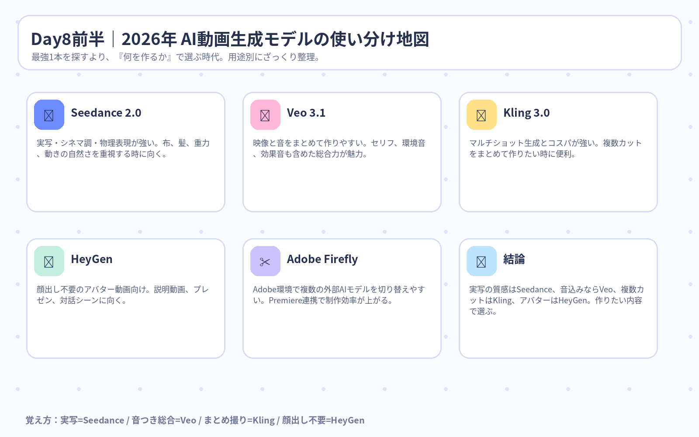
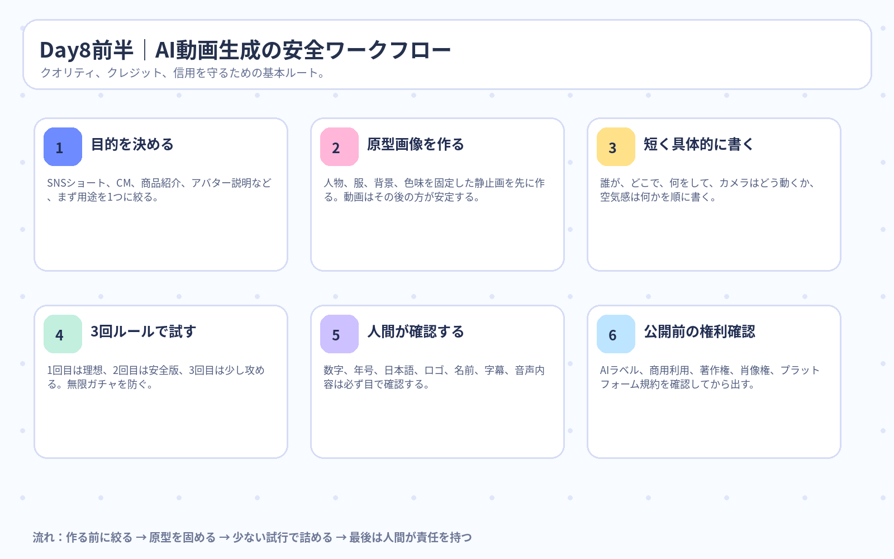
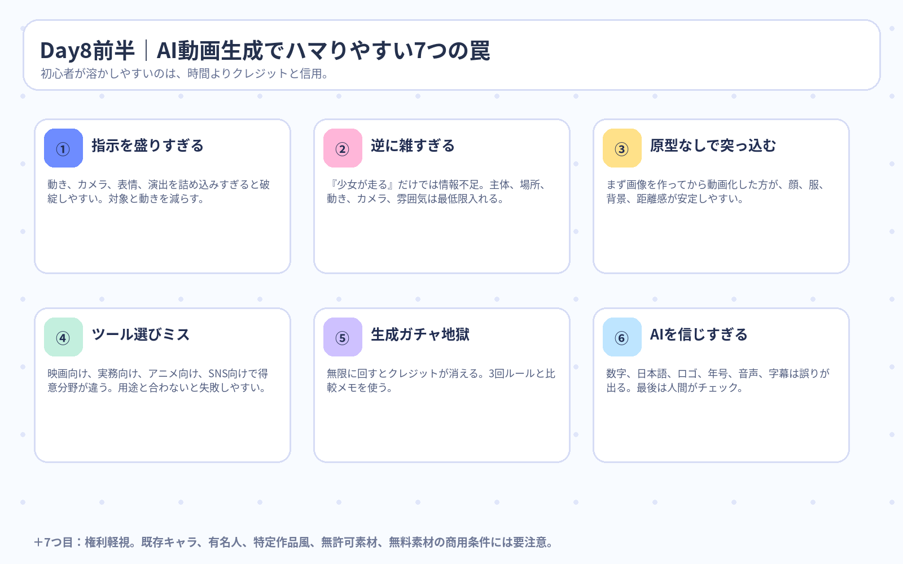
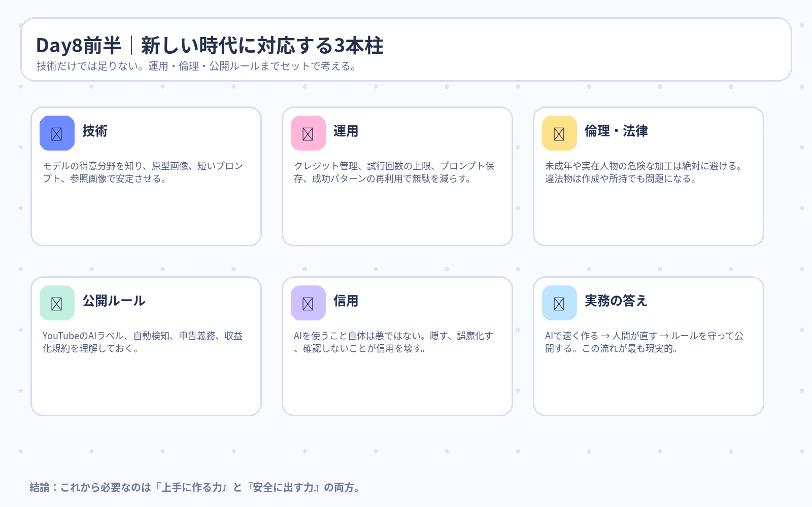
AI動画生成は、
モデル選びとプロンプト設計で
クオリティもコストも大きく変わる。
Day8後半では、実生成テストで見えてきたモデルの実力差と、動画生成の精度を上げるプロンプトの作り方を学ぶ。Seedance 2.0、Veo 3 Pro、Kling 3.0などの使い分けに加えて、世界観、表情、動き、カメラ、禁止事項、リファレンス、リップシンク、続きを生成する方法まで、初心者向けに噛み砕いて整理する。
1. 実生成テストで見るモデルの現実的な選び方
酔っ払いのおじさん動画、Vlog風動画、商品レビュー動画のように、実写感、日本語音声、リップシンク、指示再現を比べると、モデルごとの得意・不得意がかなり見える。
ランキングって、1位だけ使えばいいの？
本気の高品質ならSeedance 2.0が強い。でも、たくさん試すならVeo 3 Proのコスパが魅力。SNS量産ならKling 2.6や2.5も候補。つまり、目的と予算で変えるの。
やさしく言うと：高級レストランと日常の弁当屋を、同じ基準で比べない。Seedanceは本番用、Veo 3 Proはコスパ用、Kling系はSNS試作用って覚えると迷いにくいね。
実写感、動き、質感、日本語セリフ、リップシンクが非常に強い。本気の高品質動画向き。
最大16秒、日本語音声対応、コスパのバランスが良い。試作にも実務にも使いやすい。
動画品質は高いが、日本語ミスや細かいAI感が出る場合がある。万能寄りの優等生。
SNS向けのコスパ枠。軽い投稿や量産には便利だが、本番品質では上位モデルに劣る。
日本語とリップシンクは良いが、商品一貫性、Vlog感、コストに注意。
Hailuo 2.3、PixVerse、Luma Ray 2などは、指示無視、破綻、コスト面で厳しい場面がある。
2. 精度を上げるプロンプトは「細かく」ではなく「明確に」書く
細かく書けばいいわけではない。大事なのは、AIが迷うところを先回りして埋めること。世界観、表情、トーン、動き、カメラ、禁止事項を整理して書く。
「女性が商品を紹介する動画」
→ 場所、表情、カメラ、商品、雰囲気、音声、動きが不明。
「明るい朝のキッチン。30代女性が白いテーブルの前で商品を手に持ち、安心した表情でゆっくり説明する。カメラは固定、ズームなし。背景は動かさない。口元は日本語音声に合わせる。手を増やさない。」
時代、場所、空気感、光、天候を書く。映画・MV・ファンタジーでは特に重要。
不安、希望、緊張、疲れ、安心などを指定する。演出と顔のズレを減らす。
CM風、Vlog風、映画風、ドキュメンタリー風、SF風、アニメ風などを入れる。
3. 動きとカメラは、欲張るほど壊れやすい
動画生成AIは、激しい動き、複数人、手、口、カメラ移動が重なると破綻しやすい。最初は小さく動かし、成功したら少しずつ増やす。
控えめ、ゆっくり、一定速度で、軽く振り返る、髪が少し揺れる、などから始める。
カメラ固定、ズームなし、パンなし、背景固定を入れると、勝手な移動を防ぎやすい。
人物が多いほど破綻しやすい。不要なら1〜2人に抑える。
高速、ゆっくり、一定速度、急加速しない、などで躍動感と安定性を調整する。
月面なら浮く、物は自然に落下する、服と髪は重力に従うなどを入れる。
一人称視点、動物視点、ダイバー視点、パイロット視点などで臨場感を出す。
4. リファレンス・リップシンク・開始終了画像を使う
キャラクター固定や商品レビューのように、一貫性が大事な動画では、テキストだけで頑張るより、画像や音声を使った方が安定する。
参照画像を使うと、同じ人物、同じ服装、同じアクセサリーを保ちやすい。
朝から夜、室内から屋外など、変化のある動画は始点と終点を指定すると安定しやすい。
音声と口の動きを合わせる。MV、会話、レビュー、Vlog風動画では重要。
ダンスやアクションは、動きの参照を使うと再現しやすい。
トンネルに入る、景色が変わる、雨が降るなどを入れると単調さを避けられる。
最後のフレームを使って続きを生成すると、短い動画を自然に長くしやすい。
5. 生成後チェックで信用を守る
高性能モデルでも、同じプロンプトから完全に同じ動画は出ない。だから、成功プロンプトの丸コピーより、破綻しにくい構造を理解する方が重要。
- 顔、手、指、口、目線
- 日本語音声、字幕、看板、ロゴ
- 数字、年号、統計、名称
- 商品や人物の一貫性
- 商用利用、著作権、肖像権
1回目は理想形、2回目は安全版、3回目は少し攻める。3回やってダメなら、モデルを変えるか、原型画像やプロンプトを作り直す。
AI動画生成は、最初から明確に指示すると、修正回数とクレジット消費を減らせる。ただし最後に信用を守るのは人間。AIに作らせ、人間が確認し、必要なら編集で直す。
6. Day8後半の図解まとめ
モデルランキング、精度を高めるプロンプト、動きとカメラ、リファレンスと長尺化を図解にした。画像クリックで拡大できる。
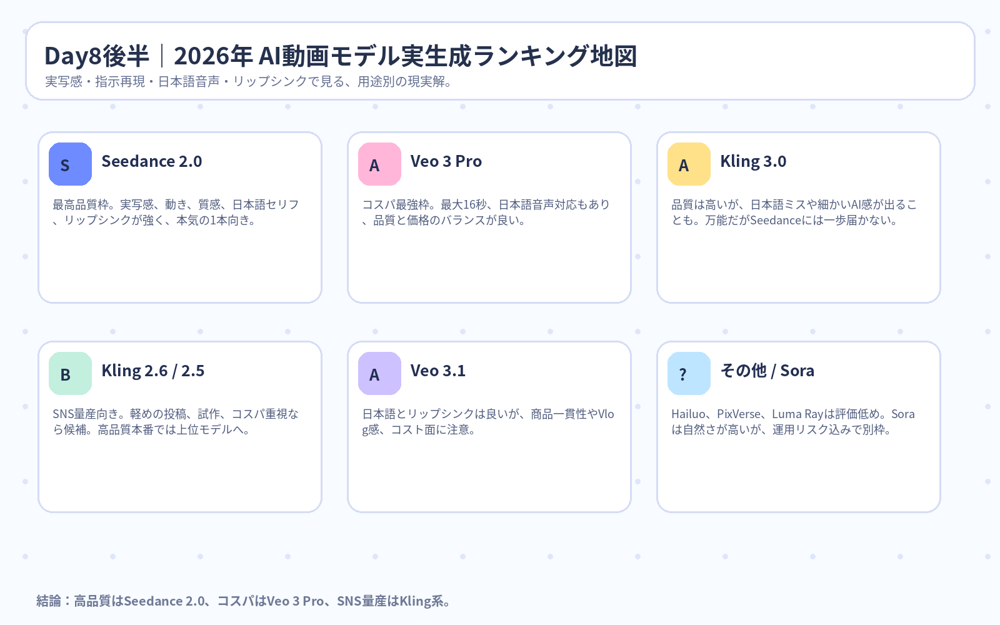
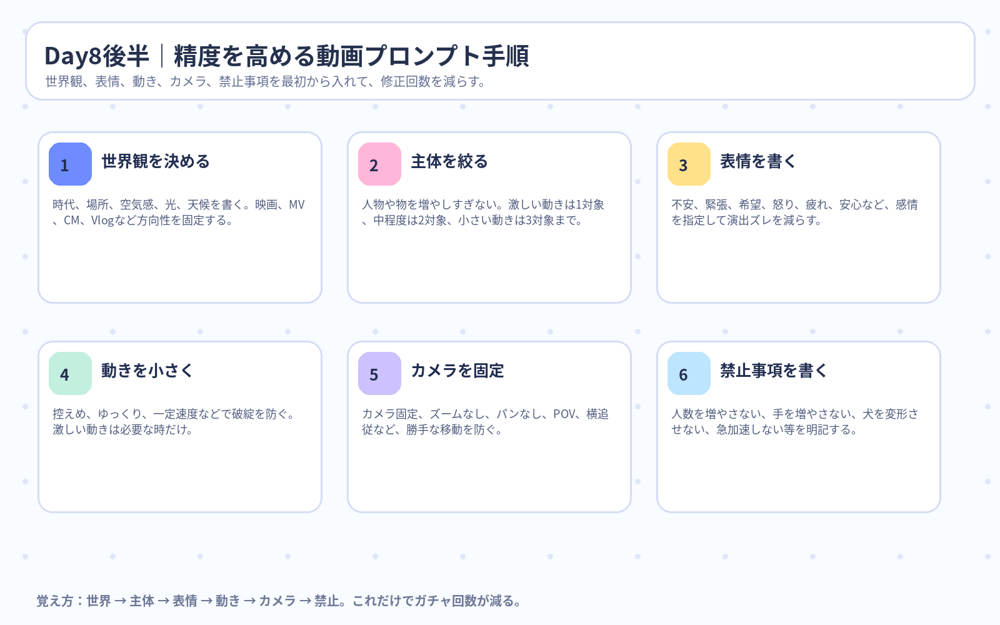
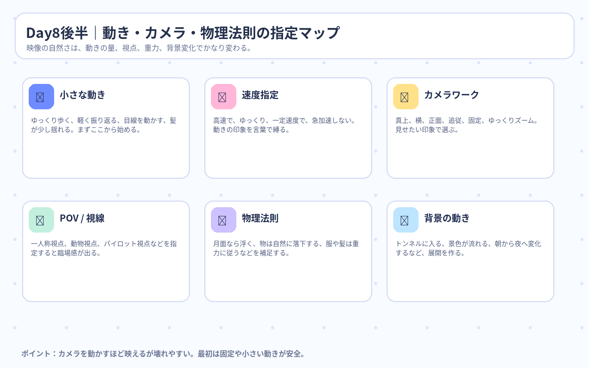
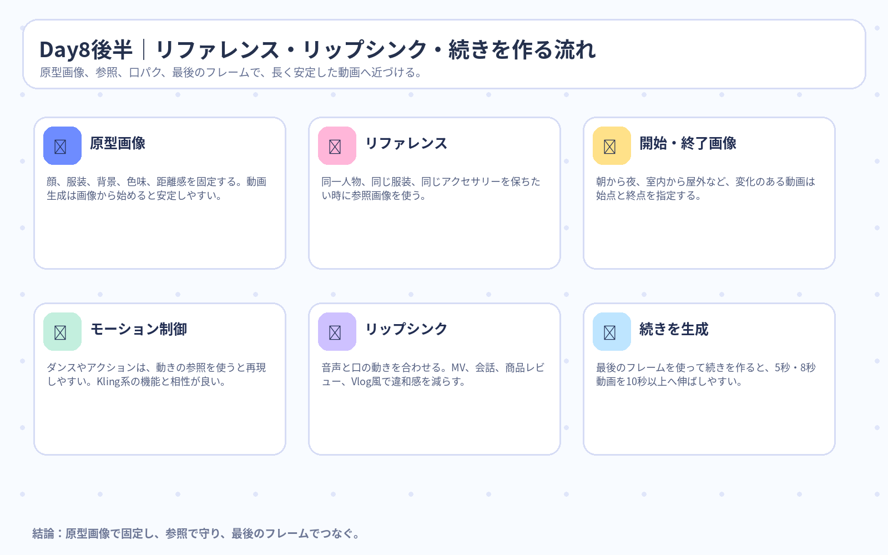
スマホでも、
ただの記録映像から
映画っぽいVlogへ変えられる。
Day9前半では、スマホだけでシネマティックな映像を撮る考え方と、Vlogの基本構成を学ぶ。4K・24FPS、AE/AFロック、腰の高さで撮る、背景を整理する、前ボケや玉ボケを使う、始まり・本題・終わりで並べる、といった基本を超初心者向けに噛み砕いて整理する。
1. スマホでも映画っぽい映像は撮れる
高いカメラがなくても、設定、撮る高さ、背景整理、ちょっとした動きだけで雰囲気はかなり変わる。大事なのは機材より「何を見せたいか」を決めて撮ること。
スマホだと、どうしても普通の記録映像っぽくなっちゃうんだよね。
まずは4K・24FPSにして、AE/AFロックで明るさとピントを固定。あと、目線の高さで撮らないだけでも印象がかなり変わるわ。
やさしく言うと：撮る前に「勝手に明るさが変わる」「勝手にピントが動く」を止める。設定を整えるだけで、スマホの暴走を減らせるってことだね。オート任せにしすぎないの大事。
映画に近い見え方にしやすい基本設定。まずここからで十分。
明るさとピントを固定して、急な変化やピンボケを防ぐ。
目線ではなく、腰の高さ、被写体の目線、ローアングルを使う。
2. カメラアングルと背景整理で素人感を減らす
スマホ映像が普通っぽく見える原因は、目線の高さ、広角で全部を入れすぎること、背景が散らかっていること。この3つを直すだけでかなり見やすくなる。
人間が普段見ない高さなので、ちょっと作品っぽく見えやすい。
人や動物は、その目線に合わせると自然で感情が伝わりやすい。
低い位置から撮ると迫力と非日常感が出る。建物、道路、人物に効果的。
広角で全部を入れるより、被写体に寄って主役をはっきりさせる。
背景を整理しやすく、被写体を強調しやすい。料理や人物にも向いている。
看板、通行人、散らかった背景が主役を邪魔していないか確認する。
3. おすすめの4つのカメラワーク
建物や風景みたいに動かない被写体でも、スマホの動かし方次第で映像に変化が出る。大きく動かす必要はなく、少し動くくらいで十分。
0.5倍の広角で、地面や床の近くを移動。スピード感が出やすい。
木、門、柱、植物を前景に入れて通り抜けると、奥行きが増える。
被写体の周囲を回る。中心を保ちながら、すり足でゆっくり移動する。
光、色、水面、反射をゆっくり左右や前後に動かして撮る。つなぎに便利。
小股、すり足、膝を少し曲げる、常に片足が地面につく意識。この歩き方だけでスマホ映像はだいぶ安定する。
4. Vlogは「始まり → 本題 → 終わり」で考える
Vlogは難しく考えなくていい。物語の流れを3つに分けるだけで十分見やすくなる。旅行、日常、料理、勉強、どれでも使える基本形。
移動、入口、朝の準備、今日やること紹介。1〜5カットくらいで短くまとめる。
食事、作業、景色、体験など、その日のメインを順番に並べる。
帰り道、夕暮れ、空、手を振る場面など。5〜10秒くらい少し長めに撮ると締まりやすい。
編集で使うのは1〜3秒が多い。だから撮影では少し長めに残す。
時系列順に並べ、基本は短く切る。最後だけ3〜5秒くらい余韻を残す。
日付、場所、店名を入れると、動画日記として見やすくなる。
5. 前ボケ・背景ボケ・玉ボケで奥行きを作る
スマホでも、手前、主役、奥の3つを意識すると、一気に立体感が出る。ボケは高級カメラの専売特許じゃなく、撮り方でかなり近づける。
被写体と背景の距離を離す。遠くの景色を背景にするとボケやすい。
植物や小物をカメラの手前に入れる。主役への視線誘導に強い。
木漏れ日やイルミネーションなどの光を背景に使うと、丸い光のボケが作りやすい。
近くの物にピントを固定して遠景を撮ると、雰囲気ショットが作りやすい。
被写体が遠い時は望遠が有効。背景ボケが作りやすく、歪みも減る。
前ボケ、中央の主役、背景ボケ。これを意識すると映画っぽさが増す。
6. Day9前半の図解まとめ
スマホ撮影の基本、カメラアングル、Vlog構成、ボケ表現を図解にまとめた。画像クリックで拡大できる。
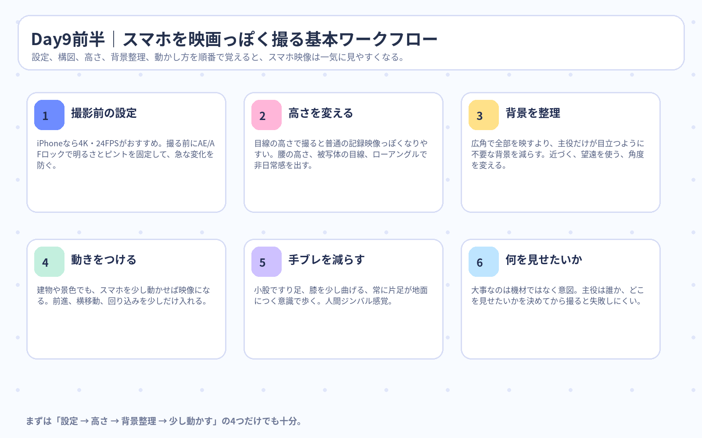
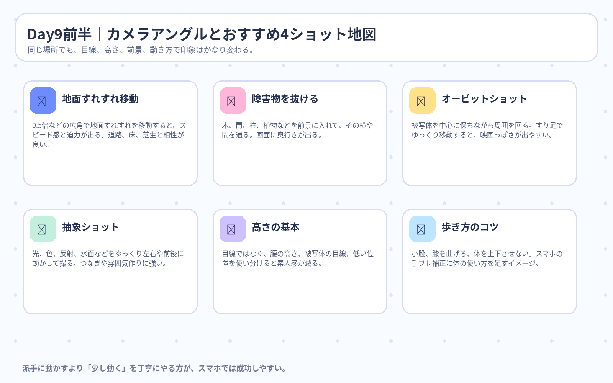
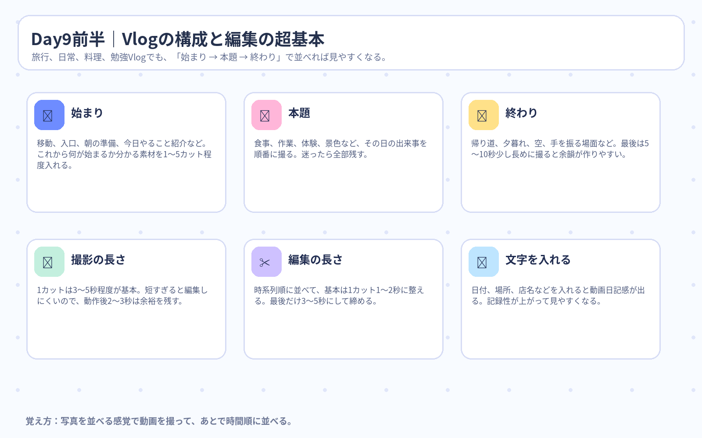
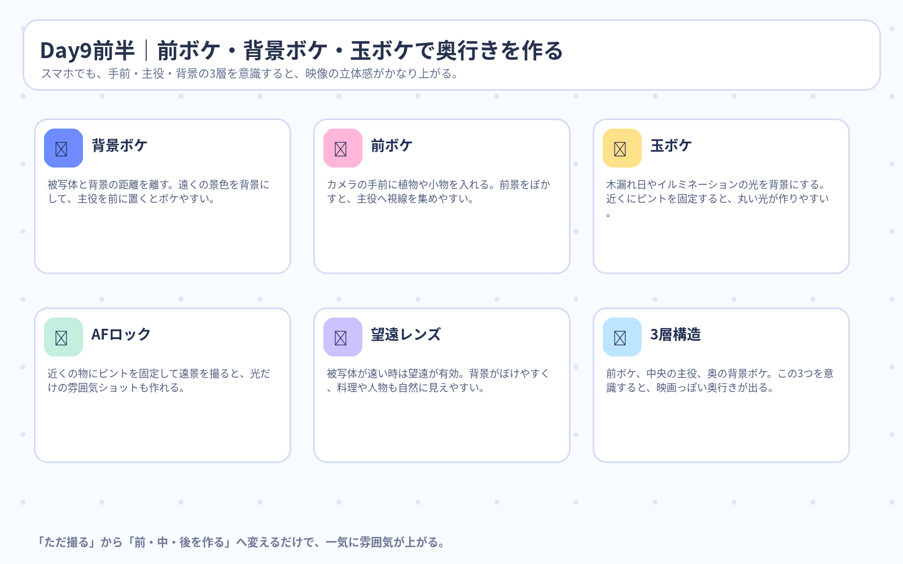
撮った後こそ本番。
保存、整理、AI編集まで
回せる人が強い。
Day9後半では、写真や動画データの保存方法、HDD・SSD・クラウドの使い分け、Photoshop生成AI＋Premiere ProでMV風に見せる流れ、Adobe FireflyでAI背景を作って合成する基本を学ぶ。撮影した後に「どう保存するか」「どう加工するか」を初心者向けに整理する。
1. 写真と動画は「撮った後」の管理が超重要
4K動画や高画素写真は、撮って終わりじゃなく、保存場所を考えないとすぐ容量が足りなくなる。まずは「どこに置くか」を決めるのが先。
高画質になるほど、データ量は一気に増えます。だから保存先を役割ごとに分けると管理しやすいです。
ざっくり言うと、編集中はSSD、完成したらHDD、共有や保険はクラウド。1か所保存は事故る前提で考えなさい。
やさしく言うと：速い置き場、安い置き場、ネットの置き場を分ける。手元の機器に保存する方法。HDDやSSDがここに入る。
ネット上へ保存する方法。複数端末で見やすく、共有にも強い。
大事なデータは1か所だけに置かない。最低2か所、できれば3か所が安心。
2. HDD・SSD・クラウドの使い分け
最強の1個を探すより、役割を分けた方がうまくいく。保存の王様はHDD、作業の王様はSSD、便利さの王様はクラウドという感じで考えると分かりやすい。
安くて大容量。長期保存、完成動画、アーカイブ向き。ただし衝撃にはやや弱い。
電源が必要で持ち運びは不向き。でも4TB〜6TBなど大容量を安く持ちやすい。
複数HDDを差し替えて管理できる。映像制作で大量データを扱う人向き。
速い、軽い、振動に強い。編集中の動画や持ち運び用ストレージに向いている。
外出先から見られる。機器故障の保険や仕事共有にも便利。
動画は容量が大きいので、全部クラウドだけで回すと重くなりやすい。動画はローカル中心が現実的。
3. おすすめのデータ管理構成
写真、動画、仕事共有で置き場所を分けると混乱しにくい。用途別に考えるのがコツ。
Amazon Photosのような写真バックアップ系と相性が良い。自動保存しやすい。
SSDへ保存。読み書きが速いから、編集ソフトが軽く動きやすい。
HDDへ移して保管。4TB〜6TBくらいで分散保存すると被害を減らしやすい。
Dropboxなどの共有向きクラウドが便利。URL共有や復元機能も役立つ。
スマホやGoogle・Apple環境と相性が良い。日常データの保管向き。
写真＝クラウド、編集中＝SSD、完成保存＝HDD、共有＝仕事向けクラウド。これが分かりやすい。
4. Photoshop生成AI＋Premiere ProでMV風に見せる
静止画をAIで少しずつ変化させて、Premiere Proで切り替えると、手軽にMVっぽい演出ができる。自宅撮影でも見せ方を盛りやすい。
Premiere Proから動画の1コマを画像として保存し、Photoshopへ持っていく。
背景や小物、衣装などをAIで変える。複数バリエーションを作って使えるものだけ残す。
元動画の上に生成画像を置き、クロップや切り替えで違和感を減らす。
AI画像は色味が浮きやすい。明るさ、色、カーブ、カラーマッチでなじませる。
色合わせが難しい時は、モノクロにすると統一感を出しやすい。
複数クリップをまとめてズームイン・アウトすると、MVっぽいカメラ演出を足せる。
動画の一部分だけをフレーム単位でAI変換する方法は、今はまだかなり手作業。だからまずは「静止画パターンを切り替える」やり方から始めるとラク。
5. Adobe FireflyでAI背景を作って合成する
背景を差し替える系は、撮影時の下準備がかなり大事。シンプルな背景で撮るほど、あとで自然になじませやすい。
壁やシートなど、情報量が少ない背景が向いている。壁から少し離れて影も減らす。
動画の一部を画像として保存し、Fireflyへアップロードして背景生成の元にする。
「カフェ風」「SF風」「映画風」など、雰囲気をプロンプトで指定して背景を作る。
Premiereなどで人物をマスクし、生成背景の上に重ねる。輪郭は少し余裕を持って取る。
輪郭をほんの少しぼかすと、切り抜き感が減って自然に見えやすい。
光がコロコロ変わると不自然になりやすい。室内照明や曇りの日の撮影が安定しやすい。
6. Day9後半の図解まとめ
データ管理、保存先の使い分け、MV風AI編集、AI背景合成の流れを図解でまとめた。画像クリックで拡大できる。
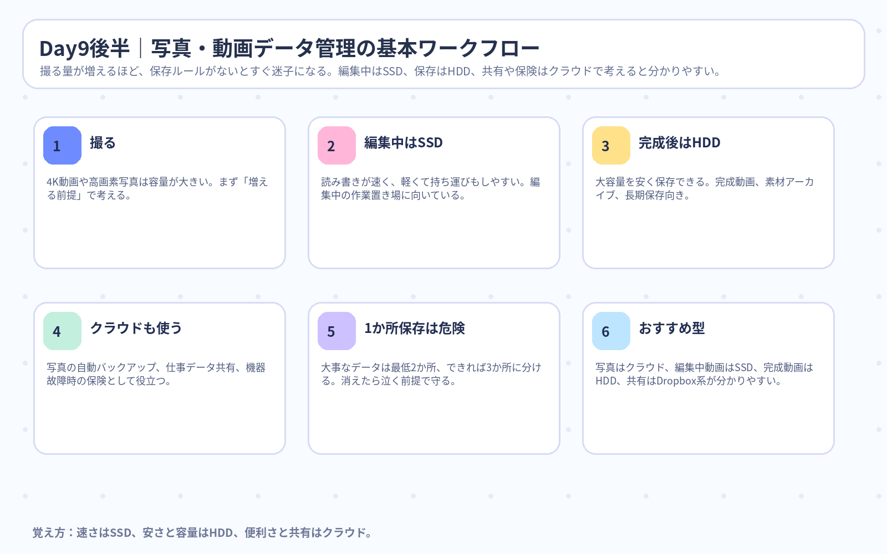
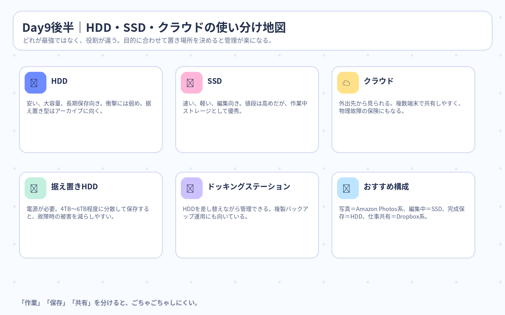
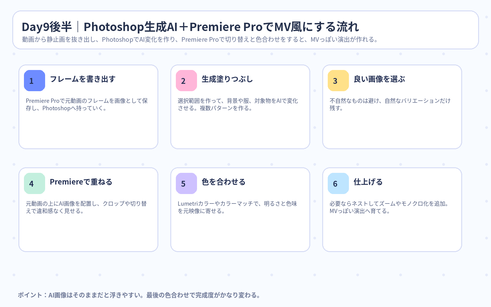
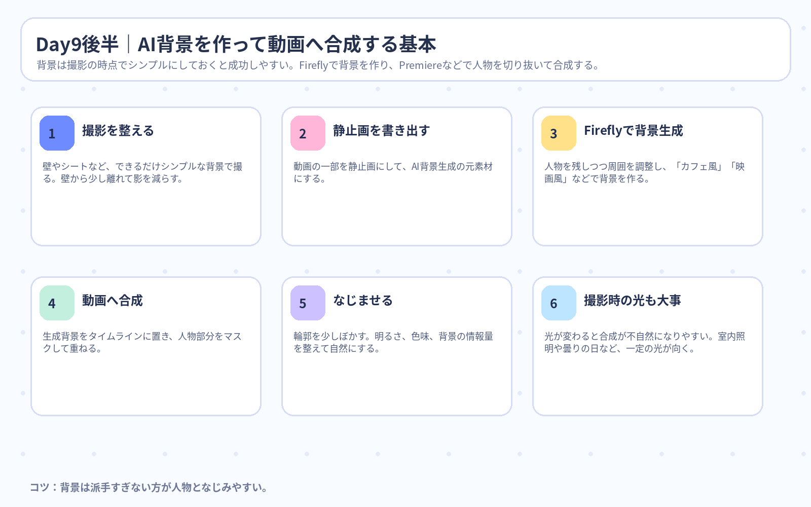
VlogのBGMは、
ただの飾りじゃない。
動画の空気を作る“影の主役”。
Day10前半では、Vlogの雰囲気を作るBGM選び、無料音源の利用条件、著作権フリーBGMサイト、SUNO AIでオリジナル曲を作る方法、編集時の音量管理とフォルダ管理を学ぶ。大事なのは、曲を探すことだけではなく、使っていい曲か確認し、動画に合わせて音量を整え、あとで条件を確認できるように管理すること。
1. VlogではBGMが“影の主役”になる
同じ映像でも、明るい曲なら楽しい日常に、静かな曲なら落ち着いた記録に、夜っぽい曲なら大人っぽいVlogに見える。BGMは動画の温度を決める大事な要素。
BGMって、なんとなく好きな曲を入れればいいの？
好きだけで選ぶとズレることがあるの。映像がゆったりなら落ち着いた曲、動きが多いならテンポのある曲。チャンネルの世界観と合わせるのが大事。
やさしく言うと：料理に合う調味料を選ぶ感じ。甘い料理に唐辛子を山盛りしない。BGMは映像を邪魔しないけど、雰囲気はがっつり変える。影の主役ってわけだね。
ゆったり映像には落ち着いた曲、散歩や作業には中くらいのテンポ、ショートには少し強いテンポ。
可愛い、爽やか、大人っぽい、夜っぽい、カフェ風など、映像の空気と曲を合わせる。
水音、足音、街の音、料理音を残すと、BGMだけよりVlogらしい空気が出る。
2. 無料BGMでも利用条件の確認は必須
無料で聞ける曲と、動画に使っていい曲は別物。YouTubeは将来収益化する可能性があるため、最初から商用利用OKの音源を選ぶ方が安全。
視聴無料でも、ダウンロードや利用には登録・課金が必要な場合がある。
収益化動画や仕事用動画で使えるかを確認する。条件が曖昧な曲は避ける。
作者名、曲名、チャンネル名、URLなどを概要欄へ書く必要がある場合がある。
YouTube上には許可なく再配布している音源もある。公式配布元か確認する。
著作権フリーという言葉は「何をしても自由」という意味ではない。利用条件を守って使うことが安全。
3. BGM入手先は目的別に使い分ける
無料で練習したいのか、仕事でも使いたいのか、他人と被りたくないのかで選ぶ場所が変わる。
無料で始めやすい定番サイト。タグ検索が便利で、初心者の練習やYouTube入門に向く。
サリーBGM、キッさん、シャローさんなど。雰囲気のある曲を探しやすいが、条件確認は必須。
有料だが高品質。おしゃれVlog、企業動画、他人と曲が被りにくい制作に向く。
完全オリジナル曲を作りたい時に強い。インスト、歌入り、歌詞付き、ブランド曲にも使える。
無料で始めたいならDOVA。雰囲気重視ならYouTube系。品質重視ならEpidemic。独自性ならSUNO。
曲名、作者、配布元、利用条件、使った動画を表に残す。あとで概要欄を書く時に助かる。
4. SUNO AIでVlog用オリジナルBGMを作る
欲しい曲が見つからない時は、AIで作る選択肢もある。Vlog用なら、歌なしのインスト曲から始めると扱いやすい。
「爽やかな朝のVlog用BGM。歌なし。明るく前向き。アコースティックギター、軽いピアノ、90BPM、日常、カフェ、散歩。」
「夜の街歩きVlog用BGM。歌なし。落ち着いたローファイ、柔らかい電子音、ゆっくり、少し大人っぽい、80BPM。」
歌がない曲。声や環境音とぶつかりにくく、Vlogで使いやすい。
1分間の拍数。数字が大きいほど速い曲になりやすい。
チャンネル専用のテーマソングや決まった雰囲気のBGMを作れる。
5. Vlog編集でのBGM音量と管理
曲を入れただけでは完成ではない。BGMが大きすぎると声や環境音を邪魔する。小さすぎると雰囲気が出ない。最後は耳で確認する。
BGMは主役ではなく支える音。声や自然音が聞こえるくらいまで下げる。
曲の始まりと終わりを少しずつ変化させる。急に始まる・急に切れる違和感を減らす。
オープニング、本題、エンディングで曲の役割を分けると、動画の流れが作りやすい。
BGM、効果音、素材、完成動画を分ける。探す時間を減らせる。
クレジット表記が必要な曲は、作者名、曲名、URLをメモしておく。
音量、曲の権利、クレジット、商用利用、無断転載でないかを最後に確認する。
6. Day10前半の図解まとめ
BGM選び、利用条件、入手先、Vlog編集での音量管理を図解でまとめた。画像クリックで拡大できる。
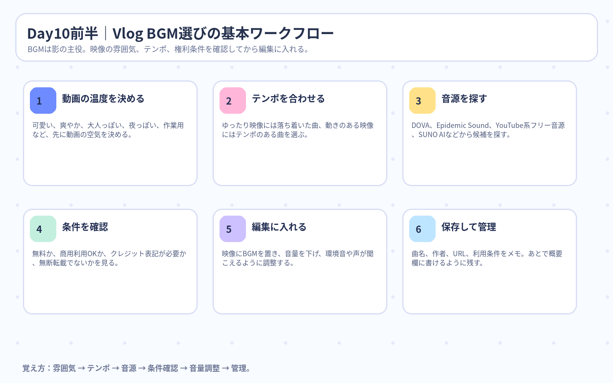
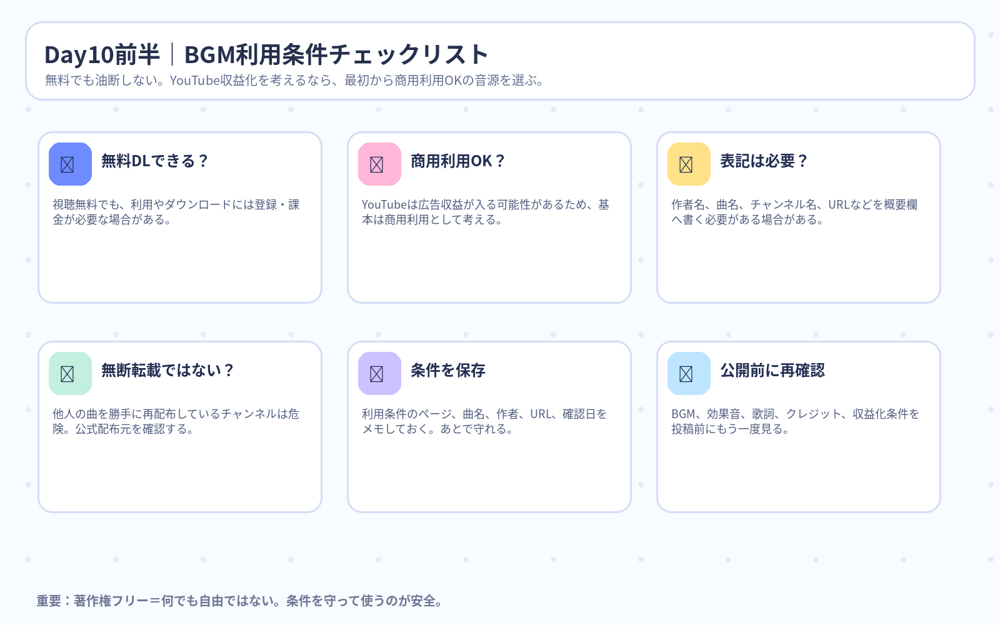
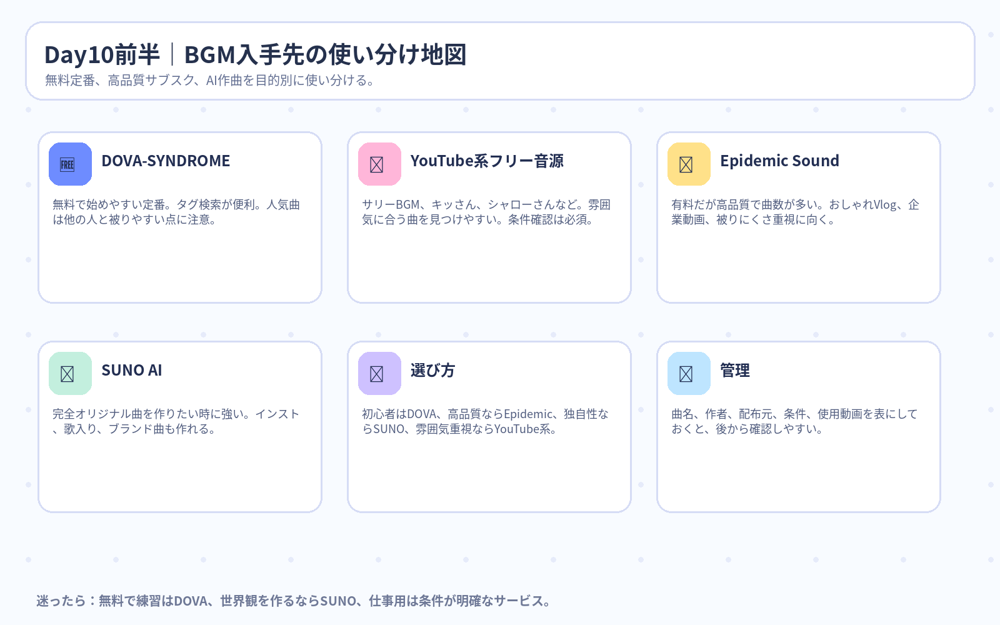

動画の音がバラバラだと、
どれだけ映像が良くても
離脱されやすい。
Day10後半では、声・BGM・効果音の黄金バランス、Premiere Proでの効率的な音量調整、ノイズ除去、BGMへのリバーブ演出、AI音声ツールの使い分けを学ぶ。音は映像の裏方だけど、完成度を決める超重要パーツ。難しく見えても、基本の数字と流れを覚えればかなり整えやすくなる。
1. 音量の黄金バランスを先に覚える
音量は感覚だけに頼ると失敗しやすい。まずは目安の数字を覚えて、それを土台にする方が速くて安定する。
音って、なんとなく耳で合わせればいいんじゃないの？
完全に耳だけだとブレやすいの。まずは目安を作る。声は -5dB前後、BGMは -28〜-25dB前後、SEは -15〜-20dB前後。この土台があると迷いにくい。
やさしく言うと：料理の味付けみたいに、最初に基準を決める感じ。声が主役、SEはアクセント、BGMは床。主役より床がうるさいとダメってことだね。
目安は -5dB前後。動画で一番聞き取ってほしい音。解説、会話、ナレーションの主役。
目安は -28〜-25dB前後。雰囲気づくり担当。声を押しつぶさない位置に置く。
目安は -15〜-20dB前後。場面のアクセント。高い音は刺さりやすいので要注意。
オーディオラバーバンドだけで全部手作業調整、トラックミキサーのつまみだけで場当たり的に調整、毎回ゼロからやり直す。この3つは遅くてブレやすい。
2. 効率よく整えるなら「トラック単位」で考える
1クリップずつ全部直すと終わらない。まずは声・BGM・SEを別トラックに分けて、トラックごとに整える方が圧倒的に速い。
① 声 / BGM / SE を別トラックへ分ける → ② オーディオトラックミキサーを使う → ③ ダイナミックでばらつきを整える → ④ 必要なら個別修正。
リミッター（上限）-5dB前後。コンプレッサー（ばらつき抑制）は補正10〜15程度。声の大小差を減らす。
リミッター -15dB前後。コンプレッサーは5程度。キラキラ音、チリン音など刺さる音だけは個別で少し下げる。
リミッター -25〜-28dB程度。コンプレッサーは軽め。声を邪魔しない土台にする。
音量の上限を決める機能。これ以上大きくならない壁を作るイメージ。
小さい音を少し持ち上げ、大きい音を抑えて、ばらつきを減らす機能。
上の2つをまとめて考えるイメージでOK。まずは音量差を整えるために使う。
3. ノイズ除去は「必要な時だけ、控えめに」
エアコンのサー音、家電のブーン音、部屋のホワイトノイズは、軽く掃除するだけでもかなり聞きやすくなる。ただし強すぎると音がこもる。
サーっと常に鳴る雑音。エアコン、PCファン、家電音などが原因になりやすい。
声トラックや問題のあるトラックにノイズ除去を控えめに適用。10〜20程度の弱めから試す。
除去を強くすると、声まで削ってこもりやすい。ゼロにしようとしすぎない方が自然。
ユニコンバーター系ツールは、AIで自動ノイズ除去しやすい。録音の掃除を手早くやりたい人向き。
歌だけ抜く、BGMだけ抜く、カラオケ音源を作るなど、音源整理にも応用できる。
まず録音をきれいに撮る。それでも残ったノイズだけをAIやエフェクトで軽く掃除する。
4. リバーブで場面転換を上品に見せる
場面転換でBGMに少し残響を足すと、余韻や期待感が出て、映像の印象がかなり良くなる。難しく見えても、やることは少ない。
① BGMの使いたい部分を決める → ② キーフレームで少しずつ音量を下げる → ③ スタジオリバーブを入れる → ④ 前後をクロスフェードでつなぐ。
Premiere Proのスタジオリバーブ。プリセットは「大ホール」から始めると分かりやすい。かけすぎは禁物。
クリップが終わると余韻も切れることがある。ネスト化や調整レイヤーで、残響が伸びるスペースを作る。
期待感、余韻、壮大さ、場面の切り替わりのなめらかさが上がりやすい。MVやSNS動画でも使える。
5. AI音声ツールは「用途」で選ぶ
AI音声は全部同じではない。長文ナレーション向き、会話向き、無料向き、音楽も作れる万能型など、強みが違う。
日本語に強く、感情表現も豊か。長文ナレーション、YouTube解説、セミナー動画に向く。
操作がシンプルで自然な音声。間の調整、ボイスクローン、AI音楽にも対応する万能型。
音声単体よりも、映像＋音声で真価が出る。口パク付きキャラ会話やアバター動画向き。
無料で始めやすい。解説動画やSNS投稿に便利。キャラクターごとの利用規約は確認が必要。
無料で試作しやすい。自然な読み上げができるが、細かい調整は専門ツールに劣ることもある。
長文ナレはFISH、案件用はFISH / MiniMax、キャラ会話はKling、無料入門はVOICEVOX / Gemini。
6. Day10後半の図解まとめ
音量の黄金比、トラック単位の整え方、リバーブ演出、ノイズ除去とAI音声ツールの使い分けを図解にした。画像クリックで拡大できる。
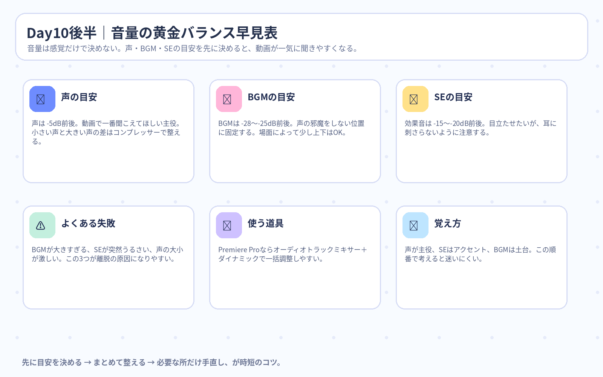
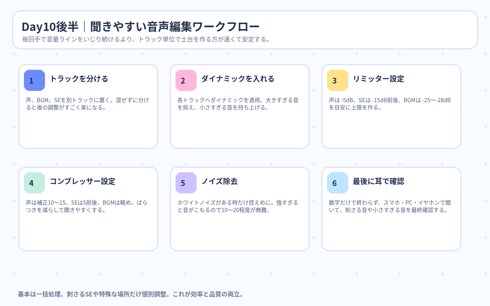
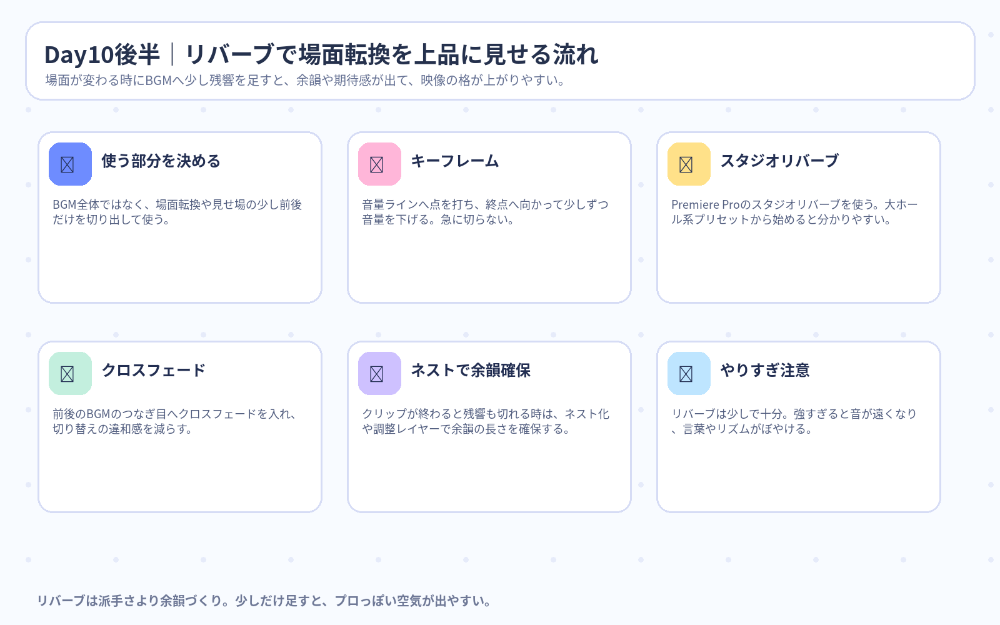
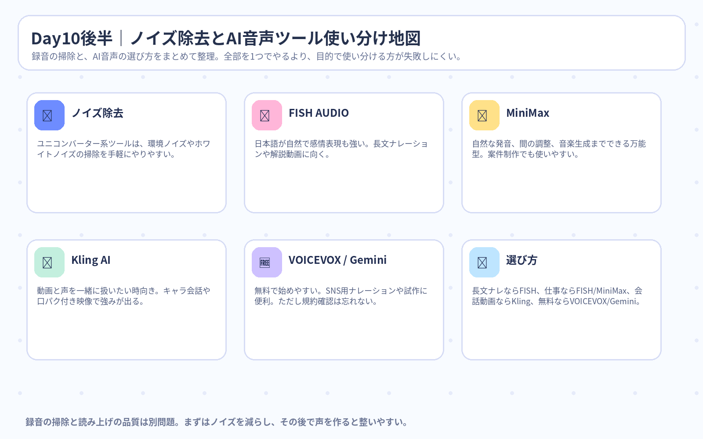
AI動画の口パクは、
“口だけ動けばOK”ではない。
声・表情・演技まで合わせて見る。
Day11前半では、Veo 3.1、Dream Machine系AI、Kling O1、Hailuo AIなどのリップシンク比較をもとに、用途別のAI選び、リップシンク動画の編集手順、失敗しやすいポイント、AIアバター動画の作り方を初心者向けに整理する。MV、VTuber、ナレーション動画、アニメキャラ、ロボット案内など、目的に合わせて使い分けることが重要。
1. リップシンクは「声と口を合わせる」だけではない
リップシンクは、音声と口の動きを合わせる技術。でも実際に見やすい動画にするには、口だけではなく、表情、目線、顔の動き、感情まで自然に見えるかが大事。
リップシンクって、口がパクパクしてれば成功なの？
それだけだと弱いわね。口、表情、目線、顔の揺れ、声の感情が合っていると自然に見えるの。だから、リップシンクは“演技を合わせる編集”だと思うといいわ。
やさしく言うと：口だけ合っても、顔が無表情だと人形っぽく見える。ただの口パクじゃなくて、声に合わせて顔全体が演技してるかを見るってことだね。
声と口の動きが合っているか。遅れたり早すぎたりしないかを見る。
笑顔、怒り、不安、落ち着きなど、声の感情と顔が合っているかを見る。
目線、顔の揺れ、身体の小さな動きが自然かを見る。
2. リップシンクAIは用途別に使い分ける
リップシンクAIは、どれが絶対最強というより、用途ごとに得意分野が違う。ナレーション、MV、VTuber、アニメ、ロボットなどで選ぶAIを変えると失敗が減る。
映画的な映像表現、自然な表情、動きが強い。映像品質重視。ただし音声指定が難しく、勝手なBGMやセリフ変更に注意。
リップシンク精度、表情変化、自然な顔の動きが優秀。ナレーション、MV、VTuber用途に向く。
アニメ、ロボット、CG、動きのある映像に強い。字幕が勝手につく場合があるので、生成後に確認する。
シンプルな人物リップシンクで高品質。複数人物の会話でも比較的安定する場合がある。
全編口パクより、サビや決めカットだけリップシンクを使う方が効率的。
キャラ固定、自然な表情、口同期を重視するならDream Machine系AIが扱いやすい。
3. リップシンク動画の作り方
いきなり長い動画を作らない。台本、音声、原型画像、短い生成、確認、編集の順番で進めると安定する。
① 台本を短く書く → ② 音声を作る → ③ 正面の原型画像を用意 → ④ リップシンク生成 → ⑤ 口と表情を確認 → ⑥ 編集ソフトで使える部分だけ切る。
「正面を向いた1人の女性キャラクターが、落ち着いた表情で日本語ナレーションに合わせて自然に話す。追加BGMなし、字幕なし、セリフ変更なし。口元と表情を自然に同期。」
複数人会話はまだ難しい。最初は1人、正面、短いセリフが安全。
音声が悪いと口パクも弱くなる。ノイズの少ない音声を使う。
生成動画全部を使わない。自然な部分だけ切ってつなぐ。
4. リップシンクで失敗しやすいポイント
リップシンクは便利だけど、複数人、横顔、歌唱、字幕、勝手な音声変更などで失敗しやすい。失敗しやすい条件を先に避けるのがコツ。
複数人会話で起きやすい。話す人を1人に絞るか、カットを分ける。
追加BGMなし、セリフ変更なし、指定音声だけ使用、と明記する。
字幕なし、画面文字なし、と指示。生成後にも必ず確認する。
横顔は口元が見えにくい。最初は正面か少し斜めの顔で試す。
穏やか、笑顔、緊張、怒りなど感情を入れると、顔全体が自然になりやすい。
MVでは全編より重要場面だけ使う。サビや短いフレーズに絞る。
5. AIアバター動画は“必要な場面だけ”使う
GoogleB系アバター機能のように、台本を入力し、アバターを選び、プレビューして生成する流れは初心者にも分かりやすい。ただし全シーンで使うと生成時間が重くなるので、必要な場所だけ使うのが現実的。
右サイドバーのアバター機能を開き、使いたいシーンを作る。
話す内容をスクリプト欄に入力。長文より短く分ける方が確認しやすい。
声、雰囲気、説明内容に合うアバターを選ぶ。
口の動き、表情、声、間を確認する。いきなり本番生成しない。
生成後は通常の動画素材として、移動、トリミング、音量調整ができる。
説明だけアバター、他はナレーションや通常素材にする方が効率的。
6. Day11前半の図解まとめ
リップシンクAIの使い分け、編集ワークフロー、失敗対策、AIアバター作成の流れを図解にした。画像クリックで拡大できる。
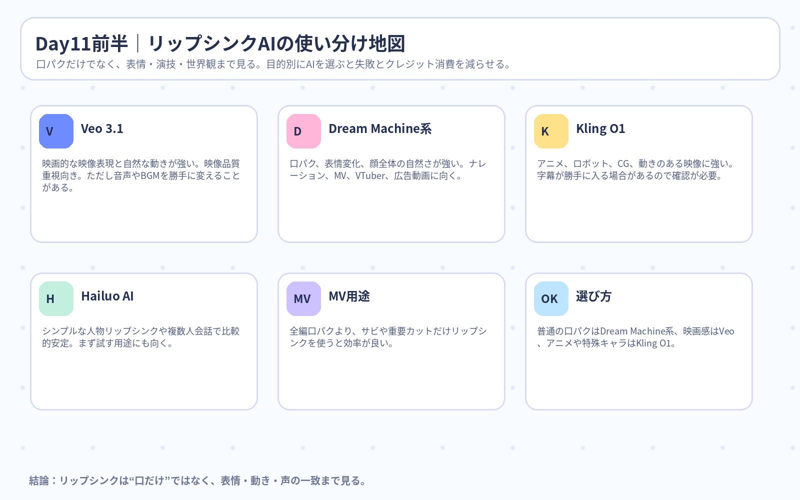
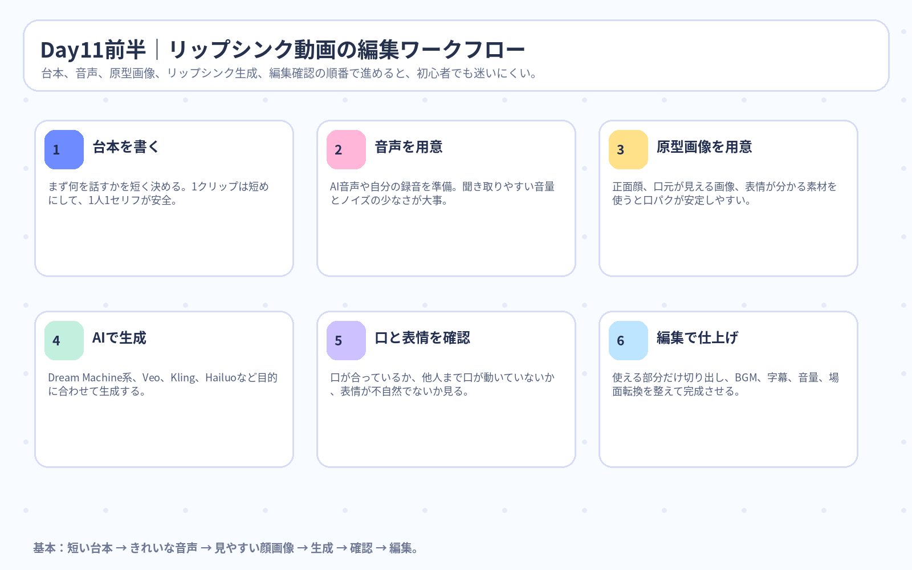
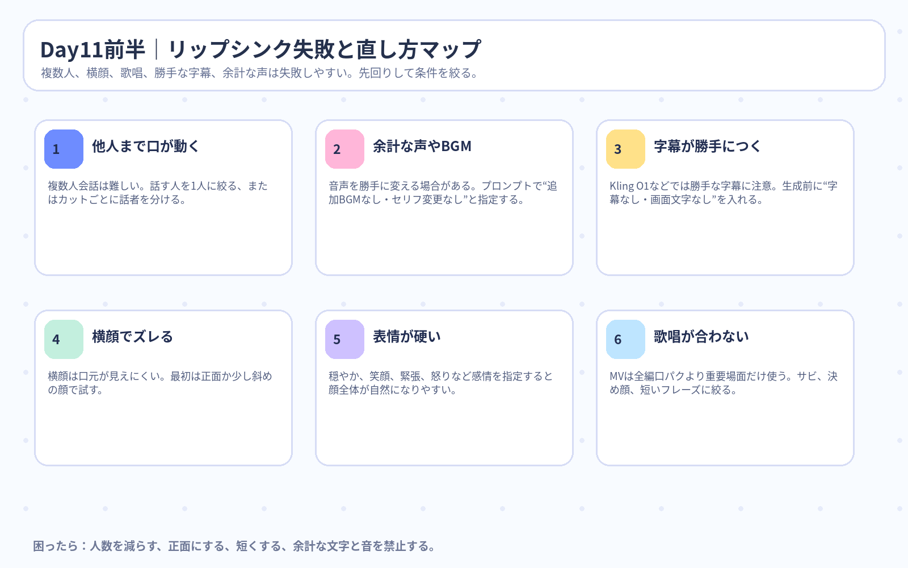
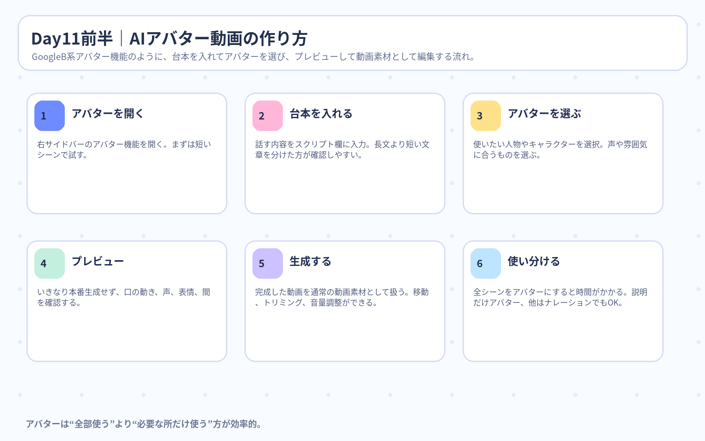
AIアバターは、
“顔を動かすおもちゃ”から
現場で使う映像素材へ進化している。
Day11後半では、実写と見分けがつきにくいリアル系AIアバター、実写人物型とバーチャルキャラクター型の違い、デジタルツイン、音声クローニング、画像生成→音声生成→動画生成の3ステップ、Kling AI・HeyGen・D-IDなどの用途別使い分けを学ぶ。初心者でも、どの素材を用意し、どのAIを使い、どこを確認するかが分かるように整理する。
1. リアルAIアバターは何が変わった？
昔のAIアバターは、顔がプラスチックっぽい、動きが硬い、背景が合成っぽい、という弱点が目立ちやすかった。最新技術では、顔、声、表情、ジェスチャー、背景のなじみがかなり自然になってきている。
AIアバターって、ちょっと人形っぽい顔のやつでしょ？
昔はそう見えやすかったの。でも今は、本人の表情、動き、話し方まで学習するデジタルツイン系が出てきて、かなり実写寄りになっているわ。
やさしく言うと：写真を動かすだけではなく、“その人っぽい動き方”まで真似する方向に進化している。顔や声を扱うため、本人確認と許可はとても重要です。便利さと安全性をセットで考えましょう。
プラスチック感、不自然な動き、背景の合成感、口元だけ動く違和感。
顔、声、表情、ジェスチャー、話し方をまとめて自然に近づける。
AIアバターは“作って終わり”ではなく、素材として編集して完成させる。
2. 実写人物型とバーチャルキャラクター型
AIアバターは大きく2種類で考えると分かりやすい。本人っぽさや信頼感を出したいなら実写人物型。顔出しを避けたい、世界観を作りたいならバーチャルキャラクター型。
カメラ録画や動画アップロードから作る。ニュース、講義、企業紹介、社員紹介、教材に向く。
写真アップロードや文章プロンプトから作る。3Dアニメ風、YouTuber風、顔出し不要の発信に向く。
AI歌手、キャラクターMV、解説キャラ、ショート動画の案内役などに使える。
複数枚の写真、本人録音音声、自然な明るさの動画素材があると再現精度が上がりやすい。
本人が出なくても、キャラクターが説明する形にできる。教育や企業研修にも使いやすい。
生成後もアバター変更、縦横比変更、トリミング、音量調整など通常素材として扱える。
3. デジタルツインを作る時の素材準備
デジタルツインは、本人の表情、動き、話し方をAIが学習した分身のようなもの。自然に見せるには、作る前の素材準備がとても大事。
録画時に視線がズレると、完成アバターも不自然に見える。レンズを見る意識が重要。
暗すぎる、影が強い、背景がごちゃごちゃしている素材は学習や生成で不利になりやすい。
声をAIに学習させる場合は、静かな場所で録音したきれいな音声が有利。
正面、横顔、表情違いなど複数素材があると、別シーンでも破綻しにくい。
顔や声の悪用を防ぐため、本人確認や許可の仕組みを必ず通す。
写真から動かすだけより、デジタルツイン＋モーション機能の方が自然なジェスチャーを出しやすい。
本人の顔や声を使う場合は、本人の許可が前提。実在人物を勝手にアバター化しないこと。
4. AIアバター制作は3ステップで考える
初心者は、画像生成、音声生成、動画生成の3つに分けると迷いにくい。いきなり全部を1つのAIでやろうとせず、得意な道具を組み合わせる。
① 原型画像を作る → ② AI音声でセリフを作る → ③ 画像と音声を合わせて動画化 → ④ 編集ソフトで整える。
「落ち着いた女性講師アバター。明るい教室背景。正面向き。やさしい表情。日本語ナレーションに合わせて自然に話す。字幕なし、追加BGMなし、口元と表情を自然に同期。」
世界観やアート性ならMidjourney系、細かい修正や調整ならGemini系の画像生成が使いやすい。
ElevenLabsなどの専用音声AIは自然なイントネーションを狙いやすい。読み間違いは必ず確認。
Kling AI、HeyGen、D-IDなど、口・表情・動き・安定性で選ぶ。
5. 用途別にAIアバターツールを選ぶ
すごいAIを探すより、作りたい動画に合うAIを選ぶ方が実用的。口パク、表情、動き、世界観、量産性で使い分ける。
1人語り、ニュース、講義、研修など、自然な口の動きと説明動画に向く。
表情、身振り、MV、複数人、動き重視の映像に向く。キャラ動画にも使いやすい。
安定したアバター生成や大量制作に向く。キャラクター中心の映像制作にも使える。
口の動きと安定感が大事。HeyGen系が使いやすい。
キャラクター性、表情、動きが大事。KlingやD-IDをカット単位で使うと効率的。
長尺台本は短いシーンに分ける。全編一発生成より、素材として分割管理する。
6. Day11後半の図解まとめ
AIアバターの種類、デジタルツインの録画準備、3ステップ制作、用途別ツール選びを図解にした。画像クリックで拡大できる。
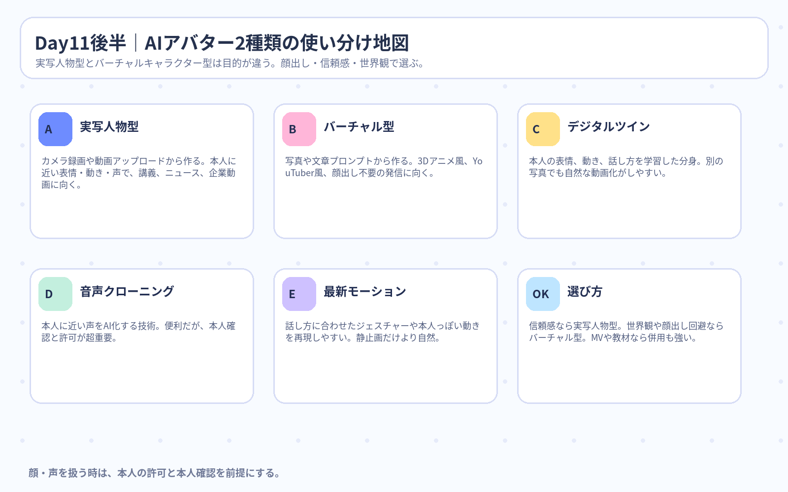
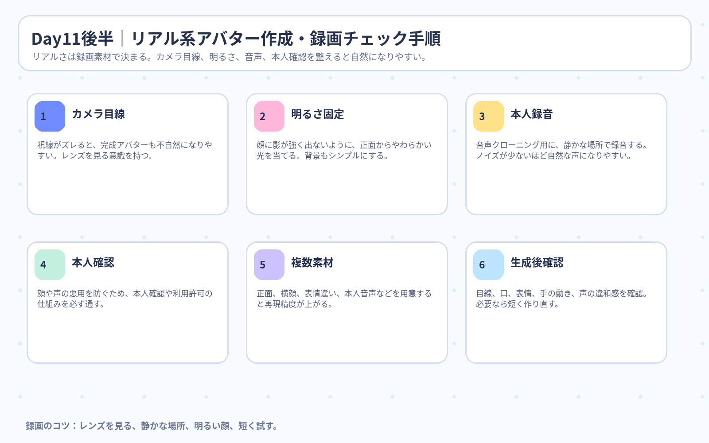
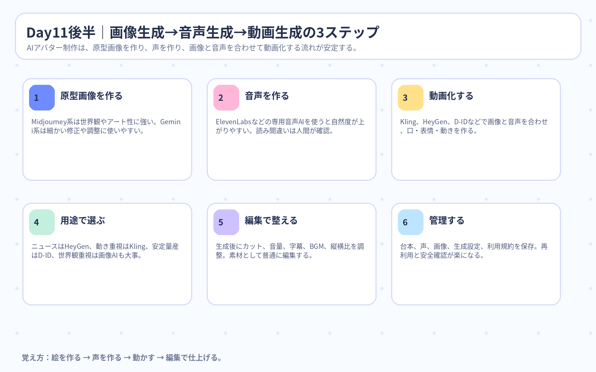
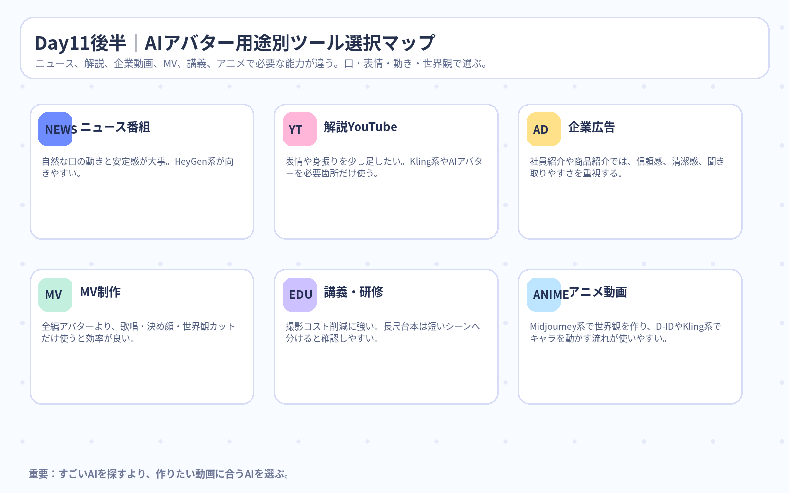
用語辞典
デジタルツイン
もっと簡単に：本人っぽく話して動くAIの分身。
音声クローニング
もっと簡単に：自分の声に似たAI音声を作ること。
本人確認
もっと簡単に：なりすましや悪用を防ぐための確認。
実写人物型アバター
もっと簡単に：本人っぽく見える説明役アバター。
バーチャルキャラクター型
もっと簡単に：顔出しせずに使えるキャラの話し手。
リップシンクAI
もっと簡単に：声に合わせて自然にしゃべっているように見せる道具。
スクリプト
もっと簡単に：アバターやナレーションに読ませる文章。
プレビュー
もっと簡単に：完成前の試し見。
VTuber
もっと簡単に：自分の代わりにキャラがしゃべる動画スタイル。
GoogleB系アバター機能
もっと簡単に：文章を入れて、選んだアバターにしゃべらせる機能。
dB
もっと簡単に：音量の数字。0に近いほど大きく、マイナスが大きいほど小さい。
リミッター
もっと簡単に：音が大きくなりすぎない壁。
コンプレッサー
もっと簡単に：うるさい所を抑えて、小さい所を少し持ち上げる道具。
ダイナミック
もっと簡単に：音をそろえて聞きやすくする処理。
リバーブ
もっと簡単に：音に余韻をつけるエフェクト。
クロスフェード
もっと簡単に：音の切り替えをなめらかにする方法。
ノイズ除去
もっと簡単に：サー音やブーン音を目立たなくすること。
リップシンク
もっと簡単に：しゃべる声に合わせて口パクさせること。
BGM
もっと簡単に：動画の雰囲気を作る背景音楽。
商用利用
もっと簡単に：YouTube収益化や仕事動画で使うこと。
クレジット表記
もっと簡単に：概要欄に「この曲を使いました」と書くこと。
BPM
もっと簡単に：数字が大きいほど速い曲。
フェードイン / フェードアウト
もっと簡単に：急に始まる・急に終わる感じをやわらげる方法。
インスト
もっと簡単に：声がないBGM。
HDD
もっと簡単に：安くたくさん入る保存箱。完成動画の保管向き。
SSD
もっと簡単に：速い保存箱。編集中の作業向き。
クラウド
もっと簡単に：ネットの倉庫。共有やバックアップに便利。
バックアップ
もっと簡単に：予備コピーを作ること。
Lumetriカラー
もっと簡単に：映像の明るさや色味を整える道具。
マスク
もっと簡単に：人物だけ残して背景を変えるための切り抜き指定。
ネスト
もっと簡単に：細かいパーツを1つにまとめる箱。
FPS
もっと簡単に：動画のコマ数。24FPSは映画っぽい見え方の基本。
AE/AFロック
もっと簡単に：スマホが勝手に明るさやピントを変えないように止める機能。
オービットショット
もっと簡単に：主役のまわりをぐるっと回る撮り方。
Vlog
もっと簡単に：動画の日記みたいなもの。
前ボケ
もっと簡単に：手前をぼかして主役を引き立てる撮り方。
玉ボケ
もっと簡単に：イルミネーションの丸いキラキラみたいな見え方。
リファレンス
もっと簡単に：「この顔・服・雰囲気を保って」と見せる見本。
リップシンク
もっと簡単に：しゃべっている声と口パクを合わせる機能。
POV
もっと簡単に：自分の目で見ているようなカメラ視点。
モーションコントロール
もっと簡単に：AIに「この動きをまねして」と教えること。
マルチモーダル
もっと簡単に：文章だけじゃなく、絵も音も一緒にわかるAI。
API
もっと簡単に：ソフト同士の連絡口。
物理表現
もっと簡単に：“ちゃんと現実っぽく動いて見えるか”のこと。
AIラベル
もっと簡単に：「この動画、AI使ってます」の名札。
クレジット
もっと簡単に：生成すると減る“体力ゲージ”。
アバター
もっと簡単に：顔出しの代わりにしゃべってくれる代理人。
著作権・肖像権
もっと簡単に：他人の作品や顔を、許可なく使っちゃダメというルール。